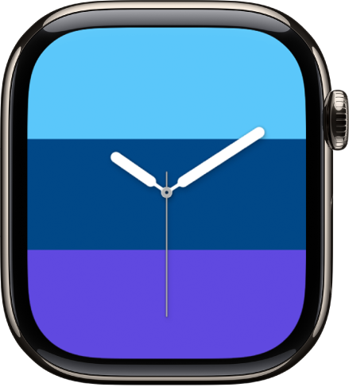

你可以在此表盘上选择想要的条纹数量，选取颜色以及旋转角度。
下方的文件数包括本地化资源。固件名称键能确认包的归属；组件的圆屏点击边界、亮屏过渡与 AOD 对照均待设备验证。
原始包 已解析属性表 Mach-O 方法与成员 ARM64 汇编 解出的图集
.strings × 44 .plist × 2 .car × 1 无扩展名 × 1
NTKMargaritaFaceBundle.bundleFACE_STYLE_MARGARITA_DESCRIPTIONEDIT_OPTION_LABEL_MARGARITA_STYLE_ANALOG_CIRCULAREDIT_MODE_LABEL_MARGARITA_STYLEEDIT_OPTION_LABEL_MARGARITA_ORIENTATION_VERTICALEDIT_OPTION_LABEL_MARGARITA_STYLE_ANALOG_FULLEDIT_MODE_LABEL_MARGARITA_DENSITYEDIT_OPTION_LABEL_MARGARITA_ORIENTATION_HORIZONTAL色组与设备条件 Margarita.color.plist 共享色组与默认值
-[NTKMargaritaColorPalette tritium_stripe];-[NTKMargaritaFaceView tritium_usesWidgetTransitionPresetColors];-[NTKMargaritaFaceView tritium_createFaceAnimator];-[NTKMargaritaFaceView tritium_alwaysOnTimelines];-[NTKMargaritaFaceView _tritium_updateComplicationColors];-[NTKMargaritaFaceView tritium_timeViews];-[NTKMargaritaBackgroundView applyTransitionFraction:fromStyle:toStyle:];-[NTKMargaritaBackgroundView applyTransitionFraction:fromRotation:toRotation:];-[NTKMargaritaBackgroundView applyTransitionFraction:fromStripeCount:toStripeCount:];-[NTKMargaritaBackgroundView applyTransitionFractionToCompactCircular:];-[NTKMargaritaFaceView _updateDialTicksForBezelText];-[NTKMargaritaFaceView tritium_usesWidgetTransitionPresetColors];-[NTKMargaritaFaceView _applyTransitionFraction:fromOption:toOption:forCustomEditMode:slot:];-[NTKMargaritaFaceView complicationDisplayWrapperView:didUpdateCustomDataAnimationFraction:fromEarlierView:toLaterView:isForward:animationType:animationDuration:];-[NTKMargaritaFaceView tritium_createFaceAnimator];-[NTKMargaritaFaceView transitionalPalette];-[NTKMargaritaFaceView tritium_alwaysOnTimelines];-[NTKMargaritaFaceView _applyTransitionFraction:fromStyle:toStyle:];-[NTKMargaritaFaceView _applyTransitionFraction:fromComplication:toComplication:slot:];-[NTKMargaritaFaceView setTransitionalPalette:];-[NTKMargaritaFaceView _configureForTransitionFraction:fromEditMode:toEditMode:];-[NTKMargaritaColorPalette complication];-[NTKMargaritaColorPalette stripe];-[NTKMargaritaBackgroundView layoutSubviews];-[NTKMargaritaBackgroundView _layoutStripes];-[NTKMargaritaBackgroundView _layoutStripesForStripeCount:];-[NTKMargaritaBackgroundView setStripeColor:atIndex:];+[NTKMargaritaColorEditOption _snapshotKeyForValue:forDevice:];+[NTKMargaritaColorEditOption _orderedValuesForDevice:];+[NTKMargaritaColorEditOption optionWithMargaritaColor:forDevice:];-[NTKMargaritaColorEditOption pigmentEditOption];-[NTKMargaritaColorEditOption localizedName];-[NTKMargaritaColorEditOption _valueToFaceBundleStringDict];-[NTKMargaritaColorEditOption color];-[NTKMargaritaColorPalette configurationDidChange:];-[NTKMargaritaColorPalette setEditing:];-[NTKMargaritaColorPalette identifier];-[NTKMargaritaColorPalette isEditing];-[NTKMargaritaColorPalette setStyle:];-[NTKMargaritaColorPalette _complication];-[NTKMargaritaColorPalette init];-[NTKMargaritaColorPalette style];-[NTKMargaritaColorPalette copyWithZone:];-[NTKMargaritaColorPalette _stripe];-[NTKMargaritaColorPalette tritium_stripe];+[NTKMargaritaFace _richComplicationSlotsForDevice:];+[NTKMargaritaFace _orderedComplicationSlots];+[NTKMargaritaFace defaultColorForStripeIndex:];+[NTKMargaritaFace _defaultSelectedComplicationSlotForDevice:];+[NTKMargaritaFace firstStripeSlot];+[NTKMargaritaFace _colorSlots];+[NTKMargaritaFace _slotsForCustomEditMode:forDevice:];+[NTKMargaritaFace _defaultSelectedSlotForCustomEditMode:forDevice:];-[NTKMargaritaFace complicationSlotsHiddenByEditOption:];-[NTKMargaritaFace _complicationSlotDescriptors];-[NTKMargaritaFace _localizedNameForDynamicSectionCustomEditMode:slot:];-[NTKMargaritaFace complicationExistenceInvalidatesSnapshot];-[NTKMargaritaFace _numberOfOptionsForCustomEditMode:slot:];-[NTKMargaritaFace _defaultOptionForCustomEditMode:slot:];-[NTKMargaritaFace _indexOfOption:forCustomEditMode:slot:];-[NTKMargaritaFace shouldColorEditModeBeAtTop];-[NTKMargaritaFace _optionAtIndex:forCustomEditMode:slot:];-[NTKMargaritaFaceView _bezelComplicationTextWidthInRadians];-[NTKMargaritaFaceView createFaceColorPalette];-[NTKMargaritaFaceView _editSpeedForCustomEditMode:slot:];-[NTKMargaritaFaceView tritium_usesWidgetTransitionPresetColors];-[NTKMargaritaFaceView _applyTransitionFraction:fromOption:toOption:forCustomEditMode:slot:];-[NTKMargaritaFaceView _faceEditingViewShouldOffsetForComplicationEditMode];-[NTKMargaritaFaceView layoutSubviews];-[NTKMargaritaFaceView _applyBreathingFraction:forCustomEditMode:slot:];-[NTKMargaritaFaceView complicationDisplayWrapperView:didUpdateCustomDataAnimationFraction:fromEarlierView:toLaterView:isForward:animationType:animationDuration:];-[NTKMargaritaFaceView _keylineFrameForCustomEditMode:option:slot:selectedSlot:];-[NTKMargaritaFaceView transitionalPalette];-[NTKMargaritaFaceView _applyOption:forCustomEditMode:slot:];-[NTKMargaritaFaceView _prepareForEditing];-[NTKMargaritaFaceView _cleanupAfterEditing];-[NTKMargaritaFaceView _applyTransitionFraction:fromComplication:toComplication:slot:];-[NTKMargaritaFaceView _hideTimeAndComplicationsInHomeScreen];-[NTKMargaritaFaceView _keylineViewForCustomEditMode:slot:selectedSlot:];-[NTKMargaritaFaceView utilityComplicationView:didChangeTextWidth:];-[NTKMargaritaFaceView _hasBezelComplication];-[NTKMargaritaFaceView _complicationSlotsHiddenByCurrentConfiguration];-[NTKMargaritaFaceView setTransitionalPalette:];-[NTKMargaritaFaceView setBlackPalette:];-[NTKMargaritaFaceView _configureComplicationView:forSlot:];-[NTKMargaritaFaceView colorPalette];-[NTKMargaritaFaceView suggestedColorOptionForComplicationColor];-[NTKMargaritaFaceView _utilityBezelComplicationView];-[NTKMargaritaFaceView _complicationAlphaForEditMode:style:];-[NTKMargaritaFaceView _usePrimaryColorForNonAccentedColorForView:];-[NTKMargaritaFaceView _suggestedComplicationColorForPalette:];-[NTKMargaritaFaceView _tritium_updateComplicationColors];-[NTKMargaritaFaceView _updateComplicationColors];-[NTKMargaritaFaceView _findMostFrequentColorWithFrequencies:withLongestColor:longestLength:];-[NTKMargaritaFaceView colorForView:accented:];-[NTKMargaritaFaceView blackPalette];-[NTKMargaritaFaceView _applyRubberBandingFraction:forCustomEditMode:slot:];-[NTKMargaritaFaceView _keylineFrameForStripeAtSlot:withEditOption:stripeCount:selectedSlot:];-[NTKMargaritaFaceView slotIndexForOption:];